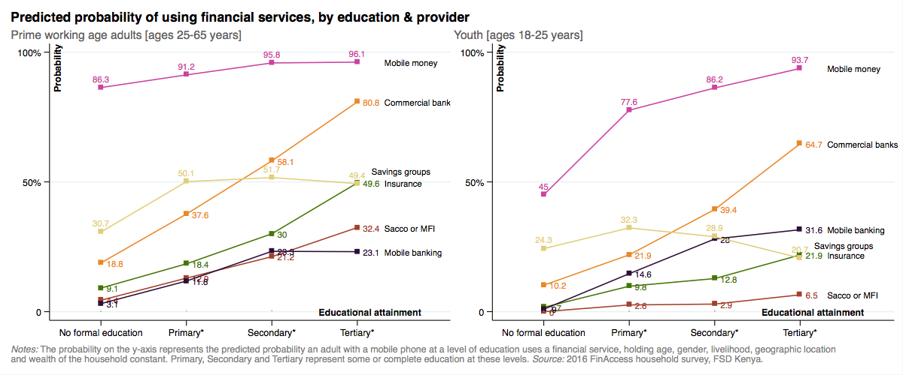
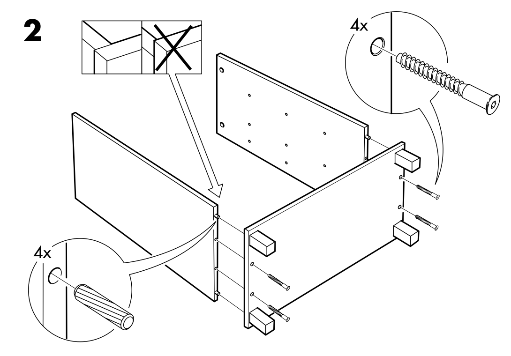
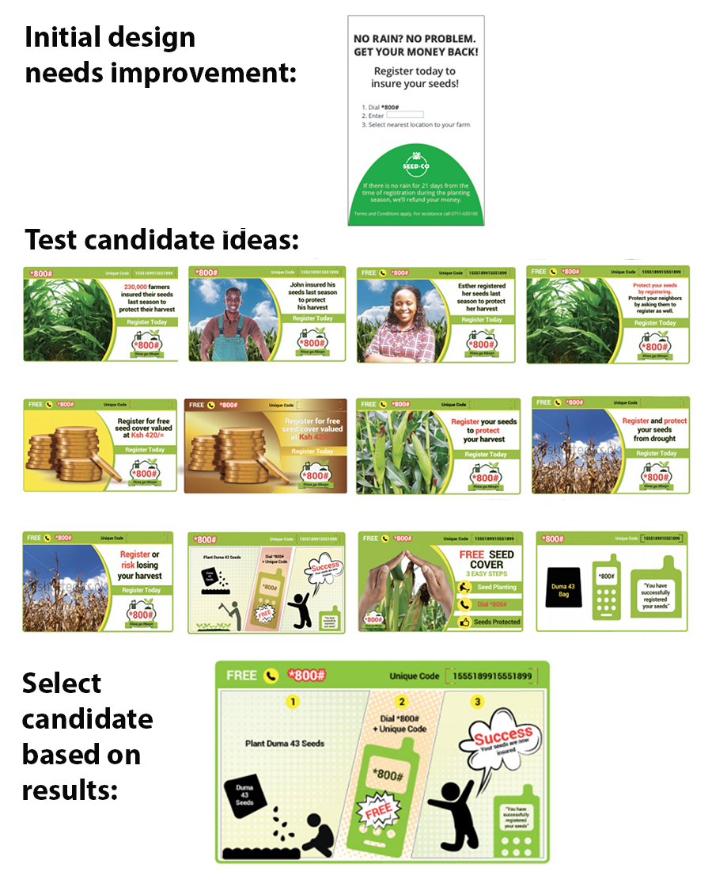

“…fintech innovations need to be more inclusive, easier to use, and designers should work harder to provide greater consumer protection and empowerment.”
Nathan Were, FINCA Canada from “Do Financial-Sector Innovations Improve the Lives of Poor People?”
“We must continue building on these platforms to help lift people out of poverty. But as we do this, it is important to realize that today’s products will not work for everyone.”
Will Cook, CGAP from “Who are Kenya’s financially excluded”
Except for cash, most formal financial instruments are not really designed so that everyone who is eligible to, can use them. Take financial instruments provided by commercial banks such as savings or checking accounts, for example. After controlling for wealth, age, gender, livelihood and mobile phone ownership, adults in their prime working ages without formal education are about 80 percent less likely to actively use services from a bank than adults with tertiary education (Figure 1). Even mobile money – Kenya’s most widely used non-cash financial instrument, has usage differences associated with education that are especially pronounced among 18-25 year olds, which represent one out of every five adults in the population. An individual in the 18-25 age bracket with tertiary education is more than twice as likely to use mobile money than an individual in that same age bracket without any formal education, holding other factors constant, including mobile phone ownership. A recent analysis by CGAP found a similarly strong influence of education on usage of financial services: compared to someone with tertiary education, a Kenyan without formal education is 26 times more likely to be financially excluded.

Its an open question as to whether these marginal differences in usage resulting from differences in education are due to product design that poses challenges for people with no or incomplete schooling, but its worth entertaining the following questions: How many potential customers are deterred or hesitant to use a product because they can’t understand or mis-understand it, and as a result fear it, or think its not for them? How many actual customers fall into traps or mis-use a product, because they don’t fully comprehend what they are getting into when they passively agree to the terms and conditions?
For digital versions of more complex financial services like insurance or credit that are accessed directly from the phone without the support of a salesperson, agent, technician or peer – the situation is likely to be even more challenging from an inclusion point of view. In these cases, where consumer risks are also greater, designing for usability may be just as critical as designing for comprehension. In other words, it is important not only that users know how to work the product (e.g. perform tasks such as signing up, reaching a call center or making a payment – with limited errors or confusion) but it is also important that they understand its behavior-contingent consequences (e.g. fees for account balances below a certain threshold, fees for account closing, extra charges if payment is not made by a certain date, reporting to a credit bureau if loan enters default, conditions for an insurance payout etc.).
Designing for comprehension as a path to scale and inclusion in Kenya, means that you must design for the person with little schooling, who may have limited literacy or numeracy, not to mention whose native fluency may be one of several non-Swahili regional languages. Evidence from nationally representative demand side surveys suggest these challenges are significant: in 2016, only 1 in 5 rural adults could fluently read and demonstrate understanding of the consent form for participation in the 2016 financial inclusion insights survey conducted by Intermedia, 1 in 2 rural adults could correctly divide Ksh 100,000 by 5 and 1 in 4 could correctly compute an interest payment of 10% on a loan of Ksh 10,000. Studies in other settings found that people in rural areas have difficulty transcoding oral representations of numbers to their written equivalent by being able to distinguish place values, or that a key challenge to adoption of mobile wallets by oral (illiterate or semi-literate populations) is the text heavy interface.
One instruction manual that is understood everywhere: The case of IKEA
If you don’t know what IKEA is let me explain briefly: IKEA is a home furnishing business with 411 stores in 49 countries and annual global revenues upwards of USD 41 billion (Kenya’s GDP by comparison is USD 70.53 billion). IKEA’s vision is “to create a better everyday life for the many people” and “to offer a wide range of well-designed, functional home furnishing products at prices so low that as many people as possible will be able to afford them”. While there are many interesting aspects of IKEA’s business model, the one I’d like to highlight here is the design of their instruction manual.
When you purchase furniture at IKEA, essentially you are purchasing the component pieces, say of a table, all packed together in a flat cardboard box that fits easily into a vehicle and which you assemble at home with simple tools. IKEA includes an instruction booklet with a step-by-step breakdown of how to assemble the furniture (Figure 2). The interesting thing about the instructions is that they are printed without words – no translations, no technical language – so that someone in Tokyo, Japan can build their table just as easily as someone in Lublin, Poland or Johor Bahru, Malaysia.
IKEA takes clarity so seriously that they hire instruction designers. In a Fast.co article, one of these designers describes one of the secrets to the process: “Test assembly provides an opportunity to find out if there is a risk that the customer might place a certain part in the wrong direction which may not look like an obvious mistake in the moment, but will cause a problem many steps later.” If clarity is one principle IKEA uses in instruction design, the second is to literally take the perspective of the customer, as the same article points out: “Designers take pains to render each successive picture from a single, unchanging point-of-view (mimicking that of the customer), so that confusing rotations or perspective changes are minimized and the customer can stay oriented more easily as he or she moves back and forth between the booklet and the parts”.

Communicating a product on a business card: The case of the replanting guarante
Two key problems faced ACRE Africa’s Replanting Guarantee product (RPG): getting noticed and being understood. The RPG is a weather-index based insurance product targeted to smallholder farmers that reimburses the costs of maize seeds if there is inadequate rainfall during the crops’ germination phase. Despite widespread distribution of the insurance in “Duma 43” branded maize seeds from SeedCo (ACRE’s distribution partner) only a very small fraction of customers of Duma 43 registered for the cover by submitting a voucher code via SMS found on a small card inside the bag. ACRE found that farmers would often discard this card when the bag of seed was opened, or not identify the card as an insurance product but as a guarantee of seed quality. If farmers did look at the card, many thought the insurance cover would cost money (even though it was free) and if they tried to register, many entered the voucher code incorrectly. In other words, either the card wasn’t getting noticed or people weren’t fully understanding how the insurance cover worked and how to register for it.
One obvious margin on which to improve this situation was on the visual design and messaging elements of the original registration card (Figure 1). The design challenge here is significant: on a small card, ACRE must get the farmers attention (who may not necessarily be shopping for insurance), communicate why the cover is valuable, how it works, how to register and establish or signal that the product and provider are trustworthy.
Since it was hard to know in which direction to make changes, ACRE identified some hypotheses and ran an experiment in partnership with the Busara Center for Behavioral Economics and FSD Kenya. We developed an initial set of thirty new designs for the insurance registration card testing five high potential behavioral themes that might encourage registration: Social norms, calls to action, financial incentives, risk aversion, and simplicity. Seedco approved half of these designs covering three of these themes as well as variants in English and Swahili and a scratch card version for testing (Figure 3)[1]. We assigned the approved designs randomly to 252,000 bags of seed (out of a total of 640,000) at the factory and distributed them across the country for the 2015 short rain season (October to November). The registration rates of each of these designs was monitored and compared against ACRE Africa’s original design.
Among the 388,000 control cards, the registration rate was 4.2%. Among the 252,000 cards with new designs, the registration rate was 4.8%. The high potential designs that had average registration rates of 5.5% – a 30% increase over the control – included the scratch card feature, a simple visual comic demonstrating the registration process, and messaging emphasizing social norms and group identity. Despite the indisputable statistical effect of the improved card design, an adoption rate of only one in 20 Duma 43 bags was still far off Acre Africa’s goal which also drives home the point that clear design is not the whole story. Certainly affordability, trust and relevance in relation to people’s needs are other critical drivers of adoption.

Are there any general design lessons that can be extracted from these two cases? Three points come to mind:
- Always take the customer’s perspective. At first, ACRE did not consider all the ways in which a small card, encountered at the time of planting, might come across in the mind of a smallholder farmer. Imagine the card falling out of the bag as you rip it open. What do you make of it? How will it get noticed? Will it be understood as a differentiated product? By adding a scratch feature to the card (which related the registration process to something most people know and do fairly regularly: purchasing and redeeming airtime scratch cards), ACRE was better able to signal that an action was required. By leveraging what people know and do, registration cards with a scratch feature were 36 percent more effective than the control card at encouraging registration. IKEA’s instruction booklets are designed sympathetically so that their customers’ point of view is literally built right in.
- Convey information clearly and visually, where possible: In the RPG experiment, a simple comic strip that visually described the insurance registration process was very effective compared to competing designs. In the case of IKEA, furniture assembly is easy (at least most of the time) due to the clarity of the diagrams in the instructions coupled with the simplicity of the construction of the furniture. Adoption of smartphones will provide financial service providers with more opportunities to use visual messaging elements, hand gesture as well as voice, which combined, could potentially ease and improve the user experience.
- Test: You have a hunch what might work well, but before going all in with a design for an interface, marketing material or product instructions, identify a few high potential competing ideas and test them in a systematic way with your target market. Testing opens you up to being surprised and changing your mind. ACRE was surprised by the outcome of its experiment and by testing their own work, IKEA’s designers are no doubt surprised by the myriad of unexpected ways their furniture assembly instructions are confusing, unclear or misleading – but testing allows them to tease out those pain points and incrementally improve their design.
[1] Our initial designs in the theme of financial incentives, included small airtime incentives with registration and a lottery for a chance to win a larger value prize, but we were not able to test these ideas as we could not get a license to do this.
Additional resources:
Here are some additional resources that provide more depth to the issues discussed in this blog:
- Microsave and My Oral village offer useful recommendations and even a fully-fledged concept for designing for oral (literate or semi-literate) populations.
- “Smartphone & Mobile Money: Principles for UI/UX Design” by CGAP lays out 21 principles for effective design of smartphone interfaces and mobile money.
- “Consumer protection in digital credit” by CGAP offers a range of practical examples and suggestions based on experimentation to improve disclosure and consumer understanding of digital credit products.
- “Introduction to rapid fire operational testing for social programs” by Innovations for Poverty Action (IPA) is a toolkit for organizations looking to improve how they learn through testing, especially in relation to the product innovation process.
- Insights 2 Impact (i2i) has a searchable archive of behavioral science research articles that can help inform behavioral interventions in financial inclusion.